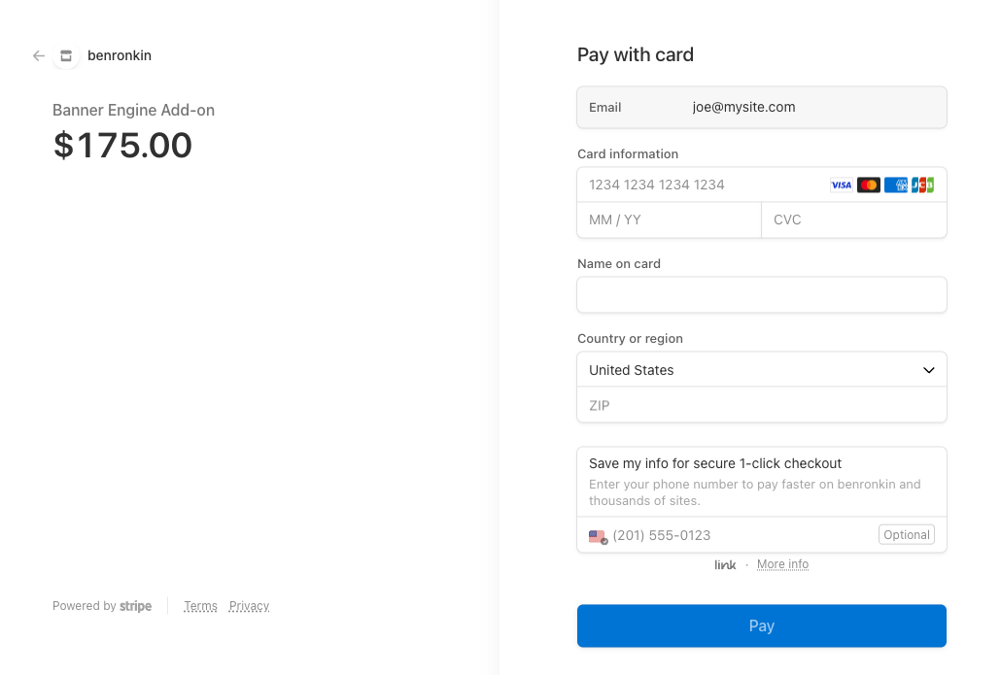

Summary
This post details my experience in deploying Stripe payments using Google Apps Script (GAS) in three different projects. The Stripe platform is easy to use, and when it's combined with GAS, launching a payment system is straightforward.
Business requirements
When designing the solution, I've had the following business requirements:
- Make it easy to sell more products in the future.
- Use a webhook to collect payment information from Stripe
- Record payments in a Google Sheet
- Email the customer an order confirmation message
- Make it easy for the customer to download the product
- Ensure that the order confirmation page works only for valid customers
High-level design
I'm sure there are many ways to implement Stripe payments on a website today, but here's what I ended up doing: A "Buy now" button on the website is linked to a Stripe payment link. When clicked, the Stripe checkout window opens.
The payment link is set to return to the product page in case of a problem, and to redirect to the order confirmation page after a successful transaction.
I've configured Stripe to post the payment information to a webhook on my end.
The webhook is a Google Apps script that is deployed as a web app. The app collects the post payload and saves it in a Google Sheet. The app then sends an email to the customer's email address with the order information.
When Stripe redirects to the order confirmation page, it adds a session ID query parameter to the URL. I have client-side code that grabs the ID and sends it to the GAS web app. The app checks in the Google Sheet if this is a valid purchase ID. If so, then it sends the order information back to the client, which displays it on the page.
Both the email message and the order confirmation page include a download link to the product that the customer purchased.
Implementation pointers
There are a few things that I've learned from my three implementations of Stripe and Google Apps Script:
Since the webhook handles both the Stripe posts and the order confirmation posts (I prefer not to use "doGet" here), then it's comfortable to split the traffic using a query parameter:
function doPost(e) {
if (e.parameter && e.parameter.wh == 1) {
return handleWebhook_(e);
}
if (e.parameter && e.parameter.c == 1) {
return handleClient_(e);
}
}In order to display the product name on the page (and in the email), the web app needs to call Stripe and fetch the order details. It then concatenates that information with the order (summary) information it originally receives and saves it in the sheet.
Every order needs an order id. I opted to use Utilities.getUuid() for that.
To display the correct download URL for the purchased product, the Google Sheet has a second tab for product information. The app looks up the product ID and gets the corresponding URL. The URL is included in the order confirmation email and page.